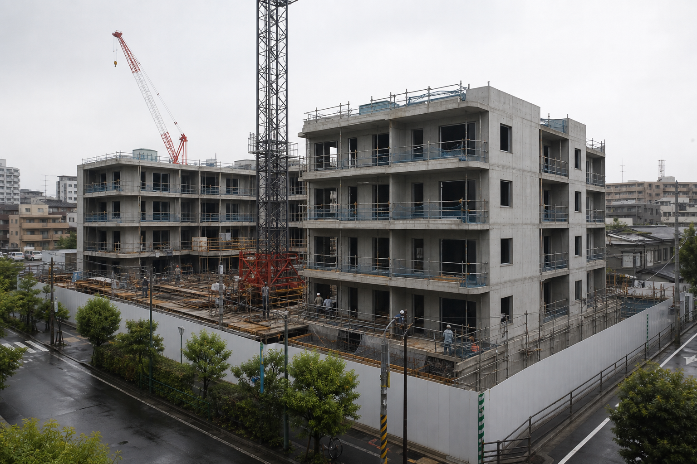

週刊首都SHUKAN SHUTO
社会都市・住宅独自取材
本誌独自
区の公開資料、元の調査と異なる数値 本形町再整備で資料改変か
新たな現地調査を行わず、事業者が測定値と結論を変更

世田渋谷区本形町二丁目で進む旧住宅地再整備事業をめぐり、区が公開した地盤・雨水排水資料に、元の調査報告書とは異なる数値が使われていたことが分かった。
週刊首都が入手した資料によると、京西地盤解析が作成した報告書（R-17）は、現在の設計のまま着工すべきではないと判断していた。その後、事業者の東湾都市開発が、新たな現地調査を行わずに数値と結論を変更したR-17bを作成していた。
区の公開資料（R-18）は、基礎資料としてR-17を挙げながら、実際にはR-17bと同じ数値と結論を掲載していた。
世田渋谷区と東湾都市開発は、事実関係を確認するため、工事とマンション販売を一時停止すると発表した。
資料提供に関わった東湾都市開発社員が死亡
東湾都市開発の社員、竹内直哉さんが、世田渋谷区内で死亡しているのが見つかった。
警視庁は、死亡した経緯を調べている。現時点で死因などは公表されていない。
竹内さんは、本形町二丁目旧住宅地再整備事業に関わっていた。東湾都市開発は「事実関係を確認中であり、回答できない」としている。
資料改変問題との関係は分かっていない。